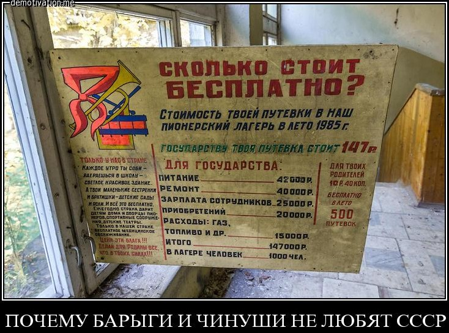
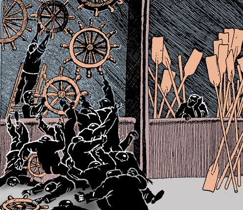

20.2. Эксплуатация «человека человеком» и мультикультурализм
Том 6 · osnovy-sociologii-tom-6.pdf · стр. 23 (кандидат) · Кандидат страницы PDF; требуется сверка · источник: PDF/DOC данной редакции.
Содержит авторские утверждения; их фактическая достоверность оценивается отдельно.
20.2. Эксплуатация «человека человеком» и мультикультурализм
Описанной выше биологической, инстинктивной основе эксплуатации «человека человеком» — её первичному генератору — сопутствуют разного рода социокультурные факторы, также открывающие возможности для эксплуатации «человека человеком» или делающие эти возможности безальтернативно «автоматически» реализуемыми в соответствующей культурной среде. Это — вся совокупность «игр с ненулевой суммой», возникших в культуре того или иного общества как естественным образом, так и созданных искусственно целенаправленно (см. раздел 8.5 — том 2 настоящего курса).
Тем, кто не желает догадываться о значении слов эксплуатация «человека человеком», подскажем: этот термин обозначает исторически сложившийся системно организованный паразитизм одних «людей» на труде и жизни других, включая и угнетение процессов зачатия и развития будущих поколений. Т.е. речь идёт не столько о спонтанно возникающем эпизодическом паразитизме тех или иных одиночек (пусть они даже и порождают некую социальную статистику), а прежде всего, — о вырастающем из спонтанно-эпизодического <u>системообразующем паразитизме разного рода меньшинств на труде и жизни большинства; системно организованном паразитизме, поддерживаемом и воспроизводимом в преемственности поколений на основе социальной организации (т.е. поддерживаемом культурой как информационно-алгоритмической системой)</u>, поскольку слово «эксплуатация» подразумевает осознанно-целесообразные действия по «эксплуатации объекта эксплуатации»1.
Предельным выражением устремлённости к эксплуатации «человека человеком» в истории нынешней глобальной цивилизации является библейский проект порабощения человечества от имени Бога (см. раздел 8.4 — том 2 настоящего курса).
После того, как мы рассмотрели инстинктивную (биологическую) основу возникновения и устойчивого воспроизводства в жизни цивилизации эксплуатации «человека человеком» в преемственности поколений, необходимо пояснить социокультурные аспекты порождения и воспроизводства этого явления.
В марксизме освещение этой темы жизненно несостоятельно: в нём источником эксплуатации человека человеком называется «частная собственность на средства производства», но само понятие «собственности на средства производства» не раскрывается ни по отношению к частной, ни по отношению к общественной собственности, переход к которой согласно марксистским воззрениям якобы неизбежно ликвидирует эксплуатацию «человека человеком».
Начнём с того, что эксплуатация «человека человеком» — многогранное явление. Оно включает в себя в общем случае экономическую эксплуатацию, а кроме неё — внеэкономическую, когда эксплуатируются физиологические или психологические ресурсы других людей в целях удовлетворения разнородных внеэкономических потребностей эксплуататора2. Но носителями внеэкономических разновидностей эксплуатации «человека человеком» являются процессы биополевые, телесно-физиологические, психологические (информационно-алгоритмические), которые не всегда видны стороннему наблюдателю, эксплуататору и эксплуатируемому. Поэтому экономическая эксплуатация наиболее зрима, хотя нравственные стандарты, порождающие эксплуатацию «человека человеком» в её экономической разновидности, в её внеэкономических разновидностях одни и те же. В условиях техносферной цивилизации эти нравственные стандарты выражаются прежде всего в сфере общественного объединения труда как, главным образом, экономическая эксплуатация «человека человеком». Поэтому далее, где речь идёт об эксплуатации «человека человеком» вообще, — никаких уточнений нет, где сказанное относится исключительно к экономической эксплуатации «человека человеком», там слову «эксплуатация» сопутствует уточняющее прилагательное — «экономическая».
Вне взаимодействия членов общества друг с другом никакая эксплуатация «человека человеком» невозможна. И точно также вне общественного объединения труда экономическая эксплуатация «человека человеком» невозможна. Для того, чтобы возникла экономическая эксплуатация «человека человеком», необходимо, чтобы:
имело место общественное объединение труда и распределение производимой на его основе продукции в обществе;
труд был профессионально специализированным, и труженики были не взаимозаменяемы в общественном объединении труда (либо вообще, либо не взаимозаменяемы без предварительной достаточно продолжительной подготовки к вступлению в новую профессию);
общество было нравственно-этически неоднородным, вследствие чего устремления разных индивидов и социальных групп в нём были бы конфликтны, что при неравенстве возможностей и способностей людей, ограниченности объёмов природных благ и производимой разнородной продукции — приводит к порождению системы «игр с ненулевой суммой» и связанной с нею иерархией социальных статусов индивидов, семей, кланов, социальных групп, народов и диаспор на основе инстинктивно обусловленной обезьяньей «врождённой морали», прикрываемой «нормами приличий» (этикетом), закрепившимися в культуре общества, но во многом представляющем собой культурные оболочки и продолжения инстинктивных программ и слабой «врождённой морали» стадно-стайных обезьян.
Последнее обстоятельство и послужило причиной того, что в материалах КОБ речь идёт об эксплуатации «человека человеком» (кавычки несут смысл), поскольку в Жизни объективно нет места эксплуатации <u>человека состоявшегося</u> <u>человеком состоявшимся</u> либо кем-либо ещё, поскольку человек состоявшийся — наместник Божий на Земле, в силу чего его эксплуатация объективно невозможна: даже если он входит в социальную систему, в которой эксплуатация «человека человеком» — явление, от которого не укрыться, вследствие чего он по своей судьбе вынужденно оказывается в ранге эксплуатируемого или эксплуататора, то смысл его жизни не в этом, а в том, чтобы изменить культуру общества так, чтобы оно продвинулось к идеалу справедливости и в перспективе искоренило бы эксплуатацию «человека человеком»; всё остальное в его жизни — издержки и сопутствующие обстоятельства, в которых он неизбежно вынужден действовать. Кроме того, попытка его эксплуатации сопровождается сопутствующими эффектами, обесценивающими результат для претендента в эксплуататоры или придающими результату некое иное качество.
Экономическая эксплуатация «человека человеком» в общественном объединении труда толпо-«элитарных» культур выражается большей частью в том, что оплата содержательно разного труда неравноценна (хотя жизненные потребности разных людей, и прежде всего — детей, во многом содержательно идентичны, т.е. равноценны) и, кроме того, общество признаёт за индивидами и социальными группами право на те или иные нетрудовые доходы, вследствие чего существуют:
- массовые профессии,
<!-- -->
трудовая занятость в которых носит вынужденный характер (т.е. труд в них фактически подневольный, рабский, поскольку работник так или иначе прямо или опосредованно принуждён к работе на условиях, которые он изменить не в состоянии) и оставляет минимум свободного времени, которого едва хватает для возобновления трудового потенциала самого труженика на протяжении его жизни (а достаточно часто не хватает и для этого потому, что люди работают на износ и в некоторых профессиях «сгорают» в течение нескольких лет, а то и быстрее3) и практически не хватает ни для общения с родственниками и друзьями, ни для личностного развития, ни для выработки и реализации активной жизненной позиции в выявлении и разрешении проблем общественной в целом значимости на местах, в масштабах государства и глобальной цивилизации;
оплата труда в которых минимальна в том смысле, что позволяет при минимуме социальных гарантий удовлетворять в минимальном объёме жизненные потребности труженика, не всегда обеспечивая даже возможность создания им семьи и продолжение рода при поддержании хотя бы прежнего социально-иерархического статуса в последующих поколениях4;
<!-- -->
«престижные» профессии (в том числе и номинально властные должности на государственной и военной службе), оплата труда в которых превышает уровень оплаты труда в массовых профессиях в несколько раз, а трудовая занятость, хотя и носит вынужденный характер, но всё же оставляет свободное время, бо́льшее, чем это необходимо для возобновления трудового потенциала труженика на протяжении его жизни, что открывает какие-то возможности для личностного развития, строительства семьи и общественно-политической активности;
иждивенцы-нахлебники — индивиды и социальные группы, собственники капитала, представленного в тех или иных формах, обладатели разного рода «статусной ренты», чьи нетрудовые доходы5 в денежной или натуральной форме находятся, как минимум, на уровне трудовых доходов в «престижных профессиях», а как максимум — многократно превышают их, благодаря чему представители этих социальных групп:
<!-- -->
оказываются вне воздействия каких-либо социальных факторов, вынуждающих их трудиться на платной основе,
обладают наибольшим объёмом свободного времени, которым распоряжаются по своему усмотрению — в лучшем случае некоторые из них по своей внутренней нравственно обусловленной мотивации занимаются общественно полезной деятельностью, которая не носит коммерческого характера (т.е. они трудятся бесплатно) и потому они инвестируют в неё свои нетрудовые доходы, возмещая тем самым свой долг обществу, а в худшем — в большинстве своём — прожигают жизнь (с жиру бесятся), паразитируя на обществе и Природе6;
<!-- -->
- кроме названных социальных групп в толпо-«элитарных» обществах имеются ещё:
<!-- -->
криминалитет, представители которого избегают общественно полезной трудовой деятельности в силу разных причин, однако они не принадлежат к группе иждивенцев-нахлебников, обладающих легальными иерархическим и потребительским статусами, но в аспекте потребления в своём большинстве прожигают жизнь, как и легальные иждивенцы-нахлебники;
и некоторая часть люмпенизированного населения (фактически — отбросов общества, занимающего самый нижний уровень социально-статусной иерархии, в пределах которого также складывается своя иерархия на принципах порождения иерархии в стаде-стае обезьян), также как и криминалитет, стоящая вне общественного объединения труда. Её доходы тоже носят большей частью паразитический характер и находятся на уровне доходов представителей массовых профессий, а большей частью — ниже их уровня. Однако в нравственно-этическом отношении эта группа идентична высшим слоям иждивенцев-нахлебников и отличается от них только меньшей «отёсанностью культурой» и уровнем образованности7, а также — большей распространённостью безволия8. Она в новых поколениях порождает низы криминалитета, из которых (при наличии у индивида воли или одержимости) вырастают его верхи, стремящиеся к легализации в средних и высших слоях толпо-«элитарного» общества.
Ещё один аспект эксплуатации «человека человеком» носит не столь явно выраженный для осознания характер, поскольку обусловлен разделением полного спектра потребностей общества и производимой продукции на две составляющие:
демографически обусловленные потребности, удовлетворение которых как в аспекте производства, так и в аспекте потребления безопасно для потребителей, окружающих, потомков и природной среды, а также необходимо для безопасного общественного развития;
деградационно-паразитические, удовлетворение которых как в аспекте производства, так и в аспекте потребления наносит вред потребителям, окружающим, потомкам, производственному персоналу, природной среде, препятствует безопасному общественному развитию и прямо подрывает его9.
Разделение потребностей индивидов, семей, социальных групп, обществ в целом на два выше названных класса проистекает из действия объективных закономерностей всех шести групп, которым подчинена жизнь людей персонально, семей, социальных групп, обществ, человечества в целом. Поэтому их разграничение — не результат субъективизма, погрязшего в нескончаемых «дискуссиях о нравах», а результат анализа причинно-следственных связей в системе отношений, представленной на следующем рисунке:
Фактически удовлетворение деградационно-паразитических потребностей тоже является разновидностью эксплуатации «человека человеком», поскольку в угоду их первоприоритетному удовлетворению в толпо-«элитарных» обществах приносится в жертву удовлетворение демографически обусловленных потребностей — прежде всего других людей, составляющих большинство.
И хотя в этой эксплуатации соучаствует некоторое количество самих эксплуатируемых (в производстве продукции по деградационно-паразитическому спектру заняты трудовые ресурсы — в том числе и низкооплачиваемые представители массовых профессий и криминалитет), от этого она не перестаёт быть социально значимой компонентой эксплуатации «человека человеком». Эта компонента в марксизме не рассматривалась11, и в СССР в качестве таковой тоже не осознавалась.
Кроме того, будучи втянутой в потребление по деградационно-паразитическому спектру, изрядная доля общества деградирует и культурно, и биологически, что создаёт предпосылки для её эксплуатации, а также — для эксплуатации потомков этой части общества в последующих поколениях за счёт снижения и подавления биологического и культурного потенциала их личностного развития деградирующими предками.
Если говорить об «играх с ненулевой суммой», на которых основываются системы эксплуатации «человека человеком» в преемственности поколений, то среди них особую роль играют объективно неизбежно возникающие «игры». Главная из них возникает как результат неравнозначности разнородных знаний и навыков как средств обеспечения положения в обществе и экономического благополучия индивидов — носителей соответствующих знаний и навыков. Об этом в Коране говорится прямо (сура 39. Толпы):
«49. И когда постигнет человека зло, он взывает к Нам. Потом, когда обратим Мы это в милость от Нас, он говорит: “Мне это даровано по знанию”. Нет, это — искушение, но большая часть из них не знает!»
Соответственно объективной неизбежности возникновения разного рода «игр с ненулевыми суммами» в жизни общества, а также соответственно неизбежности некоторого распределения «выигрышей» и «проигрышей» в них между членами общества12, — все Богооткровенные вероучения обязывают возвращать избыточное обществу, а именно — нуждающимся, обделённым в этих «играх с ненулевыми суммами», для того, чтобы в обществе не было обездоленных и общество могло успешно развиваться.
И за отказ следовать этой рекомендации предстоит дать ответ: «… И от всякого, кому дано много, много и потребуется, и кому много вверено, с того больше взыщут» (Лука, 12:48).
А расточительство, т.е. употребление природных и социальных благ без пользы людям, характеризуется как разновидность сатанизма: «26. И давай родственнику должное ему, и бедняку, и путнику и не расточай безрассудно, — 27. ведь расточители — братья сатан, а сатана своему Господу неблагодарен» (Коран, сура 17. Перенёс ночью).
Обратим внимание, что аятом 49 суры 39 Коран указал на источник, создающий социокультурные предпосылки к эксплуатации «человека человеком», — монополию на знания, открывающую возможность навязывать обществу монопольно высокие цены на продукт своей деятельности в продуктообмене в общественном объединении труда.
Произошло это за 1 300 лет до «основоположников» «научного коммунизма». И это кораническое указание куда как точнее, нежели разглагольствования «мраксизма» о частной собственности на средства производства как источнике эксплуатации «человека человеком», поскольку превосходство в знании над конкурентами — пока что единоличниками (на ранних стадиях становления классовых обществ) — изначально действующий фактор, и именно это превосходство создаёт (или завоёвывает) те или иные средства производства (только потом оказывающиеся в частной собственности) и обеспечивает их достаточно эффективное коммерческое или статусно-рентное использование.
Особо кораническое указание касается управленческого труда. Дело в том, что собственность как социальное явление это — реализуемая субъектом-собственником (единолично или корпоративно) монопольная возможность управления объектом собственности по полной функции управления. Нарушение полноты права собственности — это нарушение монополии субъекта-собственника на управление (в том числе и в форме устранения его из тех или иных этапов полной функции управления).
Поскольку в цивилизованных обществах качество жизни каждого обусловлено: 1) концепцией управления и 2) качеством управления делами общественной в целом значимости в соответствии с концепцией, — то в случае монополизации знаний и навыков управленческого характера какой-либо социальной группой, и в особенности, знаний и навыков, необходимых для осуществления концептуальной власти, все остальные оказываются в зависимости от этой группы. А безальтернативность её услуг в управленчески безграмотном обществе позволяет ей навязать остальному обществу монопольно высокую цену за своё соучастие в общественном объединении труда.
Но для того, чтобы эксплуатация «человека человеком» стала нормой жизни общества, недостаточно одной только монополии на знания или каких-либо иных объективно возникающих в обществе «игр с ненулевой суммой»: необходима нравственная готовность, доходящая до устремлённости, взимать монопольно высокую плату за своё соучастие в общественном объединении труда посредством тех или иных «игр с ненулевой суммой»; это может быть как осознанным, так и бессознательным. И в основе этой нравственной готовности лежат нечеловечные типы строя психики, и свойственная им обезьянья «врождённая мораль», порождающая иерархию особей внутри стада-стаи.
Т.е. механизм эксплуатации «человека человеком» — это обусловленная обезьяньей «врождённой моралью» и социокультурным программированием психики нравственная готовность или устремлённость к паразитизму на чужом труде и жизни (в том числе и не осознаваемая устремлённость), реализующая себя посредством разного рода «игр с ненулевой суммой» (объективно возникающих или искусственно организованных в обществе13).
Соответственно право собственности на средства производства выражает себя в управлении производством продукции и её сбытом, осуществляемом непосредственно собственником либо опосредованно — через его доверенных лиц.
Собственность частная, если обслуживающие работу средств производства не имеют реализуемой возможности отстранить от управления работой этих средств производства лиц, утративших их доверие, не обеспечивающих приемлемого качества управления, и заменить их другими. Частная собственность может быть как единоличной, так и корпоративной14.
Собственность общественная, если обслуживающие работу средств производства имеют легальную реализуемую возможность устранить из сферы управления этой совокупностью средств производства любого управленца, утратившего их доверие, не обеспечивающего приемлемого качества управления, и могут заменить их другими15.
Собственность на объекты природы — это тоже право на управление получением от них природных благ, и она тоже может быть как частной (в том числе и корпоративной), так и общественной.
Это всё в совокупности означает, что в управленчески безграмотном обществе общественная собственность на средства производства и объекты природы неосуществима, поскольку право управления ею реализуемо только в пределах ЛЕГИТИМИЗИРОВАВШЕЙ СЕБЯ корпорации носителей управленческих знаний и навыков, над которыми могут осуществлять власть (т.е. по существу — быть их собственниками) другие субъекты, вооружённые более эффективными знаниями и навыками16. И такое общество не может быть гражданским, т.е. не может быть обществом граждан, ответственных за свои индивидуальные и коллективные судьбы.
Кроме того, если право отстранить управленцев оказывается в руках люмпена, отбросов общества, носителей скотского типа строя психики, жизненный идеал которых не свобода и не свободный труд, а безделье и паразитизм в поиске разного рода наслаждений, то от управления будут отстранены как раз наиболее порядочные в нравственно-этическом отношении и наиболее эффективные управленцы — те, которые пресекают паразитизм и организуют труд наилучшим возможным в сложившихся обстоятельствах образом; либо именно такие субъекты-негодяи будут ими выдвинуты на властные должности разного рода посредством демократических процедур, оказавшихся в их руках, либо в которые их вовлекли манипуляторы фальшь-демократией.
Именно поэтому народовластие на основе участия в демократических процедурах люмпена и управленчески безграмотной толпы, невежественной в вопросах социологии и политики, — невозможно и гарантированно ведёт к фашизму беззастенчиво диктаторского типа.
Как уже было отмечено в разделе 19.2 (том 5 настоящего курса), проблемы представительной демократии состоят в том, что юридически квалифицированное большинство17, мнение которого открывает одни возможности течения политического процесса и закрывает другие, — должно быть компетентными, т.е.: 1) должно быть дальновидным в аспекте предвидения последствий принятия решения в смысле «квадрата Декарта»18 и 2) нести ответственность перед собой и другими за последствия решения, принятого на основании их мнения и волеизъявления. Это — две необходимые предпосылки для того, чтобы квалифицированное большинство в ходе исторического развития общества стало реальным большинством общества и стало праведным.
Поэтому общественную собственность невозможно ввести юридически, если в обществе нет: 1) соответствующего нравственно-этического базиса, 2) необходимых и общедоступных для освоения управленческих знаний и 3) реализующих их в практической деятельности навыков, достаточно широко распространённых в обществе — во всех его социальных группах. По этой же причине невозможно освободить раба, невольника — они могут только сами освободиться и помочь в освобождении другим.
Собственность в этом случае де-факто станет частной (единоличной или корпоративной), как это и произошло в СССР в послесталинские времена его существования, когда «номенклатура»19 стала считать <u>юридически общественную собственность</u>, своей частной, а ленинский лозунг «всякая кухарка должна научиться управлять государством» был предан забвению, знания управленческого характера были вытеснены из образовательных стандартов и было выращено несколько в своём большинстве познавательно-творчески и управленчески несостоятельных, безвольных поколений. А перестройка была организована «номенклатурой» для того, чтобы собственность, ставшую частной де-факто, сделать своей частной собственностью де-юре.20
В противоположность этому Генри Форд I, будучи создателем и юридически одним из частных собственников «Форд Мотор Компании», рассматривал это предприятие как часть общенародного достояния американского народа и соответственно этому пониманию относился к управлению им как к служению народу США21.
И общественная собственность — это не ничьё, т.е. не бесхозное, а собственность каждого, выделенная им в общее пользование. Вопрос только в широте круга собственников: как минимум это члены кооператива или колхоза, а как максимум — всё человечество.
Анализ систем «игр с ненулевыми суммами» в соотнесении их с объективными закономерностями всех шести групп, которым подчинена жизнь людей, показывает:
Для того, чтобы людей можно было эксплуатировать, они предварительно должны быть угнетены, иначе говоря, должны быть созданы условия, в которых:
Врождённый потенциал личностного развития угнетаемых был бы гарантированно пониженным в сопоставлении с потенциалом личностного развития угнетателей.
Люди не могли бы реализовать и наращивать свой потенциал развития ни в своей жизни, ни в последующих поколениях.
Люди не могли бы освоить знания и навыки (в том числе и вследствие воздействия факторов 1 и 2), позволяющие им войти в сферу управления, чтобы заменить злоупотребляющих разнородной властью управленцев.
Нравственность их и миропонимание должны быть извращены настолько, чтобы они не могли быть субъектами в схеме социального управления, представленной на рис. 13.2.2-1 (Схема взаимосвязей частных процессов управления и самоуправления в жизни государства), и это — главное из требований к системе предварительного угнетения, обеспечивающее реализацию трёх других.
Тому, как эти четыре положения реализуются в жизни толпо-«элитарных» культур, посвящена Часть 3 настоящего курса и ряд фрагментов Части 4.
В целом же — в общественно-экономических формациях, в которых эксплуатация «человека человеком» — норма жизни, существуют общественные институты и субкультуры, которые обеспечивают упреждающее угнетение и извращение развития подрастающих поколений (как в аспекте подавления биологического здоровья (фактор 1), так и в аспекте невостребованности в соответствующие возрастные периоды (фактор 2) потенциала освоения и развития способностей, данных ребёнку родителями и Свыше) с целью осуществления их последующей эксплуатации. Поэтому:
ликвидация всякой эксплуатации «человека человеком» это — не написание и не попытки введения в действие законов об «общественной собственности», «отмене и запрете рабовладения», «запрете эксплуатации человека человеком», не провозглашение деклараций о «правах человека» и т.п.,
а целенаправленная самоотверженная22 работа по ликвидации системы предварительного угнетения и извращения личностного развития, что необходимо для обеспечения всестороннего и полного личностного развития всех, на решение какой задачи должны быть настроены все общественные институты и система их взаимосвязей (см. таблицу 18‑1 — том 5 настоящего курса). Элементом этого всестороннего и полного личностного развития общества является всеобщая познавательно-творческая и управленческая грамотность, в том числе управленческая грамотность по отношению к жизни общества в разных его аспектах: «всякая кухарка должна научиться управлять государством».
После того, как мы определились в понимании сути, возникновения и воспроизводства эксплуатации «человека человеком», можно перейти к рассмотрению вопроса о национальном и конфессиональном угнетении и эксплуатации одних другими.
Для понимания этой проблематики, необходимо определиться в терминах.
«Толерантность» и «политкорректность», пропагандируемые приверженцами буржуазного либерализма в качестве нормы жизни и основы «мультикультурализма» (культуры многонационального и, возможно, — многоконфессионального общества), по своей сути представляют собой запрет на выявление пороков и их искоренение. И прежде всего этого касается пороков, генерируемых национальными и конфессиональными культурами и субкультурами, если их рассматривать как информационно-алгоритмические системы, под властью которых происходит личностное становление новых поколений.
Национальное самоосознание это — осознание индивидом23 своеобразия (уникальности) своего народа (прежде всего, как носителя культуры) и отличий своей культуры от культур других народов, также обладающих своеобразием и значимостью в общей всем народам истории развития человечества.
Национализм это — осознание неповторимого своеобразия своего народа и его культуры в сочетании с отрицанием или игнорированием, большей частью бездумно-бессознательным, уникальности и значимости для человечества и его будущего иных культур и народов, несущих свои культуры в их историческом развитии в преемственности поколений.
Расизм24 это — убеждённость в том, что достоинство человека обусловлено <u>прежде всего (а то и единственно) биологически</u> фактом происхождения от родителей, принадлежащих к определённым рода́м (кланам), племени, народу, расе, а все прочие — происходящие из других родо́в (кланов), племён, народов, рас и смешанных браков с их представителями,— достоинством человека либо не обладают в принципе, либо не обладают его полнотой.
Культура в расистском понимании вторична по своей значимости по отношению к биологической основе, и соответственно с точки зрения расистов освоение культуры «биологически высших» «биологически низшими» не делает «биологически низших» частью сообщества «биологически высших».
По мнению расистов освоение культуры «биологически высших» «биологически низшими» аналогично тому, что происходит, когда обезьяну в цирке учат проделывать те или иные трюки, что делает её поведение в ходе циркового представления в чём-то подобным поведению человека в тех или иных житейских ситуациях. Однако эта дрессура или подражание обезьяны человеку в стиле басни И.А. Крылова «Мартышка и очки» не могут сделать обезьяну человеком.
В каких-то случаях освоение культуры «биологически высших» «биологически низшими» может запрещаться, чтобы «биологически низшие» были легко отличимы от «биологически высших» в повседневности жизни общества, по сути разделённого на «касты» по признаку биологического происхождения. В противном случае неизбежны ситуации, абсурдность которых (пусть и трагическая) обличает несостоятельность расизма.
* * *
Ещё одну «историю сообщил 76-летний житель ФРГ, 100-процентный еврей: ему удалось в 1940 году бежать из оккупированной Франции по поддельным документам. Под новым немецким именем его призвали в ваффен-СС — отборные боевые части.
"Если я служил в немецкой армии, а моя мать погибла в Освенциме, то кто я — жертва или один из преследователей? Немцы, испытывающие вину за содеянное, не хотят слышать о нас. Еврейская община также отворачивается от таких, как я, ведь наши истории противоречат всему, что привыкли считать Холокостом". (…) В январе 1944 года кадровый отдел вермахта подготовил секретный список 77 высокопоставленных офицеров и генералов, "смешанных с еврейской расой или женатых на еврейках". Все 77 имели личные удостоверения Гитлера о "немецкой крови". Среди перечисленных в списке — 23 полковника, 5 генерал-майоров, 8 генерал-лейтенантов и два полных генерала армии. Сегодня Брайан Ригг заявляет: к этому списку можно добавить ещё 60 фамилий высших офицеров и генералов вермахта, авиации и флота, включая — двух фельдмаршалов"25. (…) Абсолютное большинство ветеранов вермахта сообщали в интервью, что, идя в армию, они не считали себя евреями. Эти солдаты старались своей храбростью опровергнуть нацистскую расовую болтовню. Гитлеровские солдаты тройным рвением на фронте доказывали, что еврейские предки не мешают им быть хорошими немецкими патриотами (следовало сказать немецкими нацистами: наше замечание при цитировании) и стойкими воинами26» (http://gazeta.rjews.net/briman1.shtml).
В итоге в ходе Великой Отечественной войны Советской армией в плен было взято по официальным данным 10 173 еврея27 — военнослужащих вермахта: их хватило бы на укомплектование пехотной дивизии примерно на 2/3 (штатная численность пехотной дивизии вермахта в 1941 г. — 16 859 чел.: http://battlefront.ru/rkka001.htm). «150 тысяч солдат и офицеров гитлеровской армии28 могли бы репатриироваться согласно израильскому Закону о возвращении» (http://gazeta.rjews.net/briman1.shtml).
В общем, как гласил анекдот времён третьего рейха, истинный ариец должен быть таким же светловолосым, как Гитлер29, высоким и красивым, как Геббельс, стройным и атлетичным как Геринг.
* *
*
Но национализм может и не быть расистским, т.е. он может признавать полноценными членами определённого национального общества представителей других народов и рас, если они освоили соответствующую национальную культуру и влились в неё.
Расизм такую возможность исключает полностью. Но во многих случаях национализм и расизм переплетаются и сращиваются воедино.
Нацизм — попытки уничтожения иных культур и / либо народов, их создавших, приверженцами того или иного национализма или расизма. В основе нацизма лежит национализм или расизм, но в каких-то случаях может лежать и конфессионально обусловленная нетерпимость к инаковерующим, поскольку вероисповедание может быть неотъемлемой составляющей исторически сложившейся национальной культуры.
Такое понимание национализма, нацизма и расизма означает, что они могут существовать в обществе и при монархии, и при республике (виды государственности), и при рабовладельческом строе, и при феодализме, представляющими собой разновидности сословно-кастового строя, и при капитализме, и при социализме (экономические уклады и общественно-экономические формации). Национализм, нацизм и расизм могут охватывать как отдельные группы населения, так и распространяться практически на всё общество.
Интернацизм — по существу то же самое, что и нацизм, но в мафиозном исполнении разнородных международных диаспор, а не в исполнении впавшего в нацизм какого-либо народа и поддерживаемой им государственности.
Интернационализм — неоднородное по своей сути явление и соответственно — двойственный по смыслу термин потому, что:
«Интернационализм» исторически реально стал оболочкой и лозунговым прикрытием интернацизма, подавляющего и уничтожающего национальные культуры и их носителей под предлогом борьбы с национализмом, нацизмом и расизмом (в большинстве случаев это делается средствами 5‑го и более высоких приоритетов обобщённого оружия; применение грубой силы — 6‑й приоритет — носит вспомогательный характер, вследствие чего не воспринимается большинством общества, ставшего жертвой интернацизма-интернационализма, как злоумышленная агрессия против него)30.
О первом большинство не задумывается, поскольку оно убеждено в том, что интернационализм это — якобы признание значимости для жизни человечества всех без исключения национальных культур в их развитии и безоговорочное уважение их в том качестве, в каком они сложились.
Интернационалисты декларируют второе, но исторически реально объективно служат первому:
одни потому, что являются убеждёнными интернацистами или расистами;
другие потому, что не видят ни интернацизма, ни расизма в некоторых его специфических проявлениях или имеют неадекватное собственное национальное самоосознание, будучи «общечеловеками», т.е. «космополитами безродными», утратившими чувство культурно-исторической общности судьбы со своим народом.
Одной из причин этого является следующее обстоятельство: такой интернационализм подразумевает, что все исторически сложившиеся культуры и народы их носители непорочны, хотя те или иные их представители могут быть порочны и порицаемы. Это ставит культуры и соответствующие народы в целом (включая и их диаспоры) вне анализа и вне критики их образа жизни (именно это и называется буржуазным либерализмом «толерантностью» и «политкорректностью»). Такая позиция интернационалистов как бы изымает порочную личность из сформировавшей её культуры31, и тем самым, во-первых, лишает приверженцев этой позиции возможности понять социокультурные причины, вследствие которых в каждой культуре формируется та или иная статистика порочных личностей, и во-вторых, делает национальную или диаспоральную культуру и соответствующие общества безответственным (прежде всего — морально, нравственно-этическими безответственными) за то, что именно они произвели на свет и взрастили негодяев, а так же — и за плоды дел этих негодяев.
В результате под идеологической властью интернационализма возможности выявления пороков соответствующей культуры становятся нереализуемыми, и соответственно становится невозможным их искоренение.
Так интернационализм блокирует общественное развитие, чем и обрекает на крах политику мультикультурализма и исключает достижение гармонии в национальных взаимоотношениях.
Фашизм — это один из типов культуры общественного самоуправления, возможный исключительно в толпо-«элитарном» обществе. Суть фашизма в целенаправленном воспрепятствовании становлению цивилизации человечности — цивилизации, в которой человечного типа строя психики все достигают к началу юности32.
* * *
Если говорить о том, что желательно как норма жизни для многонационального (мультикультурного) общества и человечества в целом, то:
людям должно быть свойственно национальное самоосознание в том смысле, как этот термин определён выше;
национализм, расизм, нацизм, интернацизм и интернационализм (и как оболочка интернацизма, и как «безродный космополитизм», которому — вследствие утраты чувства культурно-исторической общности со своим народом — привержены «общечеловеки») должны быть порицаемы как в обществе, так и в государственной политике;
политика многонационального государства должна быть направлена на то, чтобы тенденции к национализму, расизму, нацизму, интернацизму и интернационализму во всех его разрушительных проявлениях, если они и возникают в силу каких-то единичных причин, то не развивались бы, а глохли;
наряду с этим многонациональное общество не может существовать без того, чтобы какой-либо один (или несколько наиболее распространённых языков) были средством межнационального общения и основой культурной общности разных национальностей, позволяющей развивать и каждую из национальных культур, и культуру, объединяющую всех вне зависимости от национального происхождения каждого. Это необходимое, но не достаточное условие.
Такая цель государственной политики гармонизации национальных взаимоотношений понятна всем, приемлема подавляющему большинству тех, кто предпочитает честно и добросовестно участвовать в общественном объединении труда, а не паразитировать на труде и жизни окружающих, потомков и биосфере, и соответствует кораническому уведомлению:
«О люди! Воистину, Мы создали вас мужчинами и женщинами, сделали вас <разными> народами и племенами, чтобы вы узнали друг друга <, а не для того, чтобы каждый из вас презирал других>. Ведь самый уважаемый Богом среди вас тот, кто самый праведный. Поистине, Бог — знающий, сведущий!» (Коран, 49:13).33
Считать это неприемлемым и противиться воплощению в жизнь этого идеала как основы для дальнейшего развития человечества — могут только паразиты и родственные им по сути сатанисты.
* *
*
Однако, если общественное объединение труда существует на многонациональной (мультикультурной) основе, то эксплуатация «человека человеком» включает в себя не только личностное, клановое и классовое, но и национальное (конфессиональное) угнетение и эксплуатацию одних этнических (конфессиональных) групп другими группами или же их собственными «элитами». Это выражается в том, что:
- статистика распределения представителей разных национальностей (конфессий34) по трём названным выше социальным группам разная:
<!-- -->
в массовых профессиях и люмпене (в отбросах общества) преобладают представители одних национальных (или конфессиональных) групп — угнетаемые и эксплуатируемые,
а в «престижных профессиях» (включая и властные должности в сфере управления) и среди иждивенцев-нахлебников (а также в криминалитете) — преобладают представители других национальных (или конфессиональных групп) — угнетатели и эксплуататоры;
<!-- -->
- при этом из деградационно-паразитического спектра потребностей:
<!-- -->
представителям наций (конфессий), диаспор угнетателей и эксплуататоров достаётся роскошь и прожигание жизни,
а угнетённым и эксплуатируемым нациям (конфессиям) достаются пороки, обладающие крайне низкой себестоимостью процессов их удовлетворения, вследствие чего они обретают массовое распространение;
<!-- -->
- кроме того, — и это главный признак выявления угнетателей и эксплуататоров, — угнетатели и эксплуататоры сосредотачиваются в сфере управления35 и поддерживают свою монополию на обретение знаний и навыков управленческого характера и монополию на кадровую политику недопущения в сферу управления средствами всех шести приоритетов обобщённого оружия угнетаемых и эксплуатируемых (в частности, капитал во всех его формах — как частный, так и государственно-обобществлённый и управление им, а также статусные ренты — оказываются во власти угнетателей-эксплуататоров и некоторой части представителей угнетаемых и эксплуатируемых, которые лояльны режиму и которым доверяют угнетатели и эксплуататоры)36.
В результате возникает то, что иногда называют «этническим (или конфессиональным) разделением труда»:
одни этнические (конфессиональные) группы создают блага, работая в реальном секторе исполнителями, не имея свободного времени и получая крайне низкую долю валового продукта в расчёте на душу населения,
а другие этнические (конфессиональные) группы, достаточно часто составляющие меньшинство в мультикультурном обществе, имея свободное время и получая существенно большую долю валового продукта в расчёте на душу населения, управляют жизнью общества в целом, экономической системой общества (т.е. производством и распределением продукции) и главное — процессом угнетения и эксплуатации этнически (или конфессионально) чуждого им большинства.
В России в 2014 г. распределение богатства по национальностям выглядело так, как представлено на рис. 20.2‑1.
— Всё в полном соответствии с библейским проектом порабощения человечества от имени Бога. А утверждения о том, что ответ на вопрос «кому на Руси жить хорошо?», данный автором демотиватора, представленного на рис. 20.2‑1, — «ксенофобский», «антисемитский»37, что он сеет национальную и классовую рознь и ненависть, подстрекает к «экстремистским действиям» и т.п.38, — проблемы гармонизации национальных и классовых взаимоотношений в России не решают и народного единства де-факто не обеспечивают, и решить этих проблем не могут… Т.е. ст. 282 УК РФ, уже получившая название «антирусской», не только бесполезна в разрешении этой проблемы, но и вредна, поскольку только обостряет её.
Но статистика, представленная на рис. 20.2‑1, не даёт полного представления о системе эксплуатации «человека человеком» и её национальном аспекте, сложившейся в постсоветской России вопреки тому, что конституция РФ 1993 г. провозглашает: «Труд свободен» (статья 37, часть 1), — и это подразумевает искоренение эксплуатации «человека человеком».
Для полноты картины статистику, представленную на рис. 20.2‑1, следует дополнить ещё несколькими статистиками:
представительством в группе бедноты39 разных национальностей, живущих в России;
представительством разных национальностей, живущих в России: 1) в государственном аппарате на властных должностях (а не среди технического и обслуживающего персонала), 2) в руководстве предприятий государственного и частного секторов во взаимосвязи этой статистики со статистикой торгового оборота предприятий, 3) в банковской системе на федеральном уровне на властных должностях (а не среди технического и обслуживающего персонала);
статистикой появления представителей разных национальностей в федеральном теле- и радио эфире в качестве сценаристов, ведущих и экспертов в программах, освещающих общекультурную, политическую (глобальную, внешнюю, внутреннюю) и финансово-экономическую тематику40;
статистикой получения высшего образования41 в области: 1) философии, 2) юриспруденции, 3) социологии, 4) политологии, 5) экономики и финансов, 6) государственного и муниципального управления, 7) медицины (сопровождение беременности, акушерства и гинекологии, педиатрии — в особенности);
статистики представленности разных национальностей в продюсерском, сценаристском, а также в режиссёрском сообществах: 1) телевидения, 2) кино и 3) театра.
После этого, с учётом того, что страна пребывает в затяжном кризисе общекультурного и экономического развития, станет ясно, какие народы России и какие социальные группы в их составе — объект эксплуатации, а кто — инструмент осуществления угнетения и эксплуатации и разрушения общего всем государства, и почему изрядная доля населения страны постсоветскую государственность расценивает как антинародную вообще, и как антирусскую, в частности. И следует подумать о перспективах реакции социальной психодинамики на такое положение дел.
Т.е. проблема несостоятельности интернацистски-либерального мультикультурализма — одной из разновидностей интернацизма — актуальна и для России, а не только для Евросоюза (см. далее раздел 21.1).
Если обратиться к рассмотрению глобальной экономики, то выясняется, что эксплуатация «человека человеком» и разделение народов на эксплуататоров и эксплуатируемых это — явление глобального масштаба. В частности, это отражено в приводимой ниже таблице «“Лица” рыночной экономики»:
**Таблица 20.2-1.
«Лица» рыночной экономики
**
<table style="width:100%;"> <colgroup> <col style="width: 24%" /> <col style="width: 24%" /> <col style="width: 25%" /> <col style="width: 25%" /> </colgroup> <tbody> <tr class="odd"> <td><p><strong>Ориентированы на потребление:</strong></p> <p>США, Великобритания, Канада, Австралия.</p></td> <td><p><strong>Ориентированы на производство:</strong></p> <p>Германия, Франция, Япония, Мексика.</p></td> <td><p><strong>Семейный</strong></p> <p><strong>капитализм:</strong></p> <p>Тайвань, Малайзия, Таиланд, Индонезия.</p></td> <td><p><strong>Переходные страны:</strong></p> <p>КНР, государства СНГ.</p></td> </tr> <tr class="even"> <td><p><strong>Признаки:</strong></p> <p>Открытые границы, дерегулирование экономики, ориентация на получение прибыли.</p></td> <td><strong>Признаки:</strong> Упор на производство и занятость.</td> <td><p><strong>Признаки:</strong></p> <p>Развитие за счёт китайской диаспоры, капитал в руках отдельных семей.</p></td> <td><p><strong>Признаки:</strong></p> <p>Правительства содействуют переходу к рыночной экономике, растёт слой предпринимателей.</p></td> </tr> <tr class="odd"> <td><strong>Потенциальные проблемы:</strong> Большие различия в уровне доходов, низкие темпы сбережений, слабые центральные правительства</td> <td><p><strong>Потенциальные проблемы:</strong></p> <p>Сохранение системы социальной защиты на прежнем уровне, замедление темпов модернизации.</p></td> <td><strong>Потенциальные проблемы:</strong> Создание современных предпринимательских структур и финансовых рынков.</td> <td><strong>Потенциальные проблемы:</strong> Защита инвестиций и правовая защита, участие в многосторонних соглашениях, экономическая преступность.</td> </tr> </tbody> </table>
Эта таблица была опубликована в журнале «Германия» № 3 в июне 1995 г. RU (D21251F, на русском языке) в редакционной статье «Молниеносный обмен информацией по всему миру: новейшая техника стимулирует мировую торговлю. Взгляд на развитие мировой экономики». Из этой таблицы выпали культурно пёстрая Африка и обширный регион традиционно-коранической культуры, простирающийся от Атлантики через север Африки до границ Китая и далее на восток по территории восточно-азиатских архипелагов Тихого океана, а также свойственной многим регионам так называемого «постсоветского пространства». Однако и при этом таблица интересна своеобразной классификацией государств и противопоставлением государств: «ориентированы на потребление» — «ориентированы на производство». Противопоставление «ориентации на производство» и «получение прибыли» по-русски выражается не в формально вежливом «политкорректном» слове «потребление», а в точных, но оскорбляющих честолюбие «потребителей» и финансовых махинаторов словах: паразитизм на производстве, т.е. эксплуатация населения государств, «ориентированных на производство», населением и «элитами» государств, «ориентированных на потребление» и «получение прибыли» (т.е. ориентированных на «гешефтмахерство» — не «делание денег»). Правильность именно такого противопоставления, называющего все своими именами, подтверждается и в графе «Признаки»: ориентация на получение прибыли (т.е. приоритет финансовой деятельности над производством) и дерегулирование экономики (т.е. производства и распределения продукции и снятия многих социальных гарантий) в условиях открытых границ и умолчаниях об «общественно-политических рамках», противопоставляется «упору на производство и занятость», «общественно-политическим рамкам», (т.е. ограничениям в том числе и на финансовую деятельность с целью получения прибыли под лозунгом «Деньги не пахнут!»).
Итоги жизни на основе либерально-рыночной экономической модели в её капиталистической и феодальных модификациях печальны. К 2000 г. они были таковы, что если сократить всё человечество до деревни в 100 жителей, принимая во внимание все пропорциональные соотношения, вот как будет выглядеть население этой «глобальной деревни»42:
Таблица 20.2-2.
«Глобальная деревня»
<table> <colgroup> <col style="width: 71%" /> <col style="width: 28%" /> </colgroup> <tbody> <tr class="odd"> <td>Азиатов</td> <td>57</td> </tr> <tr class="even"> <td>Европейцев</td> <td>21</td> </tr> <tr class="odd"> <td>Американцев (северных и южных)</td> <td>14</td> </tr> <tr class="even"> <td>Африканцев</td> <td>8</td> </tr> <tr class="odd"> <td>Женщин</td> <td>52</td> </tr> <tr class="even"> <td>Мужчин</td> <td>48</td> </tr> <tr class="odd"> <td>Не белых</td> <td>70</td> </tr> <tr class="even"> <td>Белых</td> <td>30</td> </tr> <tr class="odd"> <td>Гетеросексуальных</td> <td>89</td> </tr> <tr class="even"> <td>Гомосексуальных</td> <td>11</td> </tr> <tr class="odd"> <td>59 % богатства «деревни» принадлежат</td> <td>6 (все из США)</td> </tr> <tr class="even"> <td>Не будут иметь нормальных<br /> жилищных условий</td> <td>80</td> </tr> <tr class="odd"> <td>Неграмотных в «деревне»</td> <td>70</td> </tr> <tr class="even"> <td>Будут недоедать</td> <td>50</td> </tr> <tr class="odd"> <td>Умирать в год будет</td> <td>1</td> </tr> <tr class="even"> <td>Рождаться в год</td> <td>2</td> </tr> <tr class="odd"> <td>Компьютер будет иметь</td> <td>1</td> </tr> <tr class="even"> <td>Высшее образование будет иметь</td> <td>12</td> </tr> </tbody> </table>
И в перспективе к улучшению качества жизни более чем 95 % жителей этой «глобальной деревни» и их потомков при продолжении глобализации на основе идей буржуазного либерализма нет никаких предпосылок. Со времени публикации этого уподобления глобальной цивилизации «деревне» прошло 15 лет и положение стало только хуже.
«Международная благотворительная организация Oxfam43 перед открытием очередного Всемирного экономического форума в Давосе (январь 2015 г.: наше пояснение при цитировании) попыталась, уже по традиции, привлечь внимание к растущему неравенству в мире.
Исследование организации показывает, что доля мирового богатства, принадлежащая самым состоятельным людям (1 %), возросла с 44 % в 2009 году до 48 % в 2014 году. В то же время самые бедные (80 %) на данный момент располагают только 5,5 % мирового богатства, сообщает Русская служба BBC.
Таким образом, к 2016 году 1 % населения Земли будет обладать большим состоянием, чем остальные 99 %, предупреждает Oxfam»44.
Ещё в 2011 г. были опубликованы следующие сведения:
«Специалисты по системному анализу из Швейцарской высшей технической школы в Цюрихе составили список 147 мировых корпораций, которые контролируют 40 % глобальной экономики и де-факто являются мировым экономическим правительством»45.
Поскольку при этом подавляющее большинство населения Земли не получает достойного человека воспитания и образования, и есть регионы, где большинство населения опущено ниже уровня потребления, исключающего биологическую деградацию, вследствие чего оно вымирает от голода и болезней. И это является объективным показателем того, что сверхбогатое меньшинство, составляющее несколько процентов населения планеты, не в состоянии распорядиться своим богатством и социальным статусом с пользой для развития глобальной цивилизации, вследствие чего должно безальтернативно рассматриваться как агрессивно паразитическая социальная группа.
Т.е. эксплуатация «человека человеком» и сопутствующее национальное угнетение — глобальная проблема, только обостряемая буржуазно-либеральным мультикультурализмом. Это выражается в том, что большинство населения Земли влачит существование в нищете и бескультурье, не имея никаких открытых возможностей для развития, на фоне чего передовые в научно-техническом отношении толпо-«элитарные» государства перемалывают ресурсы планеты и человечества без пользы.
Националистические и нацистские рецепты разрешения проблемы несостоятельности буржуазно-либерального мультикультурализма способны решить (с некоторыми оговорками) эту проблему взаимного недовольства только в границах мононационального государства или путём построения мононационального государства «титульной нации» методом устранения «чуждых» для начала из «правового поля», а в конечном итоге — из социальной структуры средствами принудительной ассимиляции детей, изгнания или геноцида всех «нетитульных». Но даже если оставить вне рассмотрения нравственно-этическую порочность такого подхода, то эти рецепты в принципе не способны решить проблему несостоятельности мультикультурализма в толпо-«элитарном» обществе в глобальных масштабах, поскольку из-за особенностей национальных культур — в процессе глобализации одни государства неизбежно становятся объектами эксплуатации со стороны других толпо-«элитарных» систем: осуществляется эксплуатация в форме оккупации и поглощения, колонизации (протектората) без поглощения (т.е. при утрате или ограничении суверенитета де-юре), криптоколонизации (при сохранении суверенитета де-юре), — значения не имеет; кроме того эксплуатации одних другими может сопутствовать геноцид, осуществляемый теми или иными средствами — все шесть приоритетов обобщённых средств управления / оружия могут работать на геноцид и на «самогеноцид».
Не решает этой проблемы и интернацизм в форме псевдосоциализма, что показал опыт послесталинского СССР.
Государственность как субкультура общественного самоуправления, осуществляемого на профессиональной основе, может поддерживать систему эксплуатации «человека человеком», воспроизводить и совершенствовать её в преемственности поколений, а может работать на искоренение её. Причём это касается как внутригосударственных, так и трансгосударственных и глобальных масштабов. Наука и система образования, понимаемые как общественные институты, могут помогать государственности как в насаждении и усовершенствовании системы эксплуатации «человека человеком», так и в её искоренении (см. раздел 1.6 — Часть 1 настоящего курса).
В случае сопричастности государственности делу угнетения и эксплуатации большинства тем или иным паразитическим меньшинством, явные и неявные46 доходы должностных лиц, чьи слово и подпись придают властную силу управленческим решениям47, ощутимо (или даже многократно) превосходят доходы в массовых профессиях.
В условиях системных кризисов и всеобщей разрухи, налаживание государственного управления может потребовать того, чтобы в сфере государственного управления легальные доходы должностных лиц были выше, чем в остальном — экономически бедствующем обществе, поскольку это позволяет освободить управленцев от необходимости заниматься проблемами бытового характера, сосредоточить их внимание и усилия на профессиональной деятельности. Кроме того, такой легальный подкуп управленцев отчасти является защитой от нелегального подкупа должностных лиц криминалитетом, наживающемся на кризисе, и политическими противниками — в том числе и зарубежной агентурой.
Но такой режим функционирования государственного аппарата может быть эффективным только на протяжении непродолжительного времени — максимум на протяжении приблизительно 10 лет.
Если он затягивается на более продолжительное время, то преимущества «номенклатурно» властных должностных лиц в явных и неявных доходах, становится стимулом к тому, чтобы любители лёгкой наживы и безответственности, не желающие и не умеющие работать, массово устремились делать карьеры на «государственной службе» своему кошельку48 и каблуку самки, под гнётом которой они «живут».
В этой связи ещё раз обратимся к книге В.И. Ленина «Государство и революция»49, написанной им совместно с Г.Е. Апфельбаумом (Зиновьевым) в Разливе (дачный посёлок под Петербургом) летом 1917 г. Её изучение входило в СССР во все курсы истории КПСС и научного коммунизма.
«… на примере Коммуны50 Маркс показал, что при социализме должностные лица перестают быть “бюрократами”, быть “чиновниками”, перестают по мере введения, кроме выборности, ещё и сменяемости в любое время, да ещё СВЕДЕНИЯ ПЛАТЫ К СРЕДНЕМУ РАБОЧЕМУ УРОВНЮ, да ещё замены парламентских учреждений работающими51, т.е. издающими законы и проводящими их в жизнь. ( ... ) Маркс ... увидел в практических мерах Коммуны ТОТ ПЕРЕЛОМ, КОТОРОГО БОЯТСЯ И НЕ ХОТЯТ ПРИЗНАТЬ ОППОРТУНИСТЫ ИЗ-ЗА ТРУСОСТИ, ИЗ-ЗА НЕЖЕЛАНИЯ БЕСПОВОРОТНО ПОРВАТЬ С БУРЖУАЗИЕЙ…» (текст выделен заглавными буквами нами при цитировании: он упреждающе характеризует партийно-государственную и хозяйственную бюрократию СССР как изменников делу строительства социализма и коммунизма).
В 1980‑е гг. цитирование этого фрагмента из работы создателя Советского государства повергало в молчаливое уныние руководителя любого семинара в системе политучёбы потому, что:
цитата обличала весь режим как антинародную паразитическую систему, действующую повсеместно посредством пешек, подобных самому руководителю семинара,
для руководителя семинара доказывать, что Ленин не прав — было равносильно тому, чтобы самому становиться под бой, в том числе и в случае, если предпринять «наезд» на политического активиста, публично приводящего «не ту» цитату.
Если же говорить о возможности осуществления в политической жизни общества написанного В.И. Лениным о принципах оплаты труда в органах государственной власти, необходимо обратить внимание на то, что практические меры Парижской коммуны первичны по отношению к их описанию классиками марксизма. И они по сути своей не бредовые:
С точки зрения достаточно общей теории управления Парижская Коммуна низведением зарплаты управленцев к среднему в отраслях материального производства (в «реальном секторе») уровню, пыталась замкнуть обратные связи общественного управления на трудящееся большинство, переключив их с замыкания на высокодоходные группы «элит»: как национальной, так и наднациональной — интернацистской.
Коммуна рухнула потому, что те, кто был согласен исполнять управленческие обязанности на предлагаемых ею условиях, не обладали необходимой квалификацией или были малочисленны; а обладавшие необходимой управленческой квалификацией, были преисполнены «элитарных» амбиций, видели в парижских рабочих разнуздавшуюся чернь, которую необходимо было побыстрее загнать обратно в их конуры, то есть они оказались НРАВСТВЕННО-ЭТИЧЕСКИ НЕ ГОТОВЫ К ТОМУ, чтобы управлять обществом, исходя из жизненных интересов большинства, и жить при этом так, чтобы слой профессиональных управленцев не выделялся из остального общества своим превосходством по количеству и качеству потребляемой продукции.
Хотя СССР просуществовал гораздо дольше Парижской Коммуны (69 лет52 и 73 дня — соответственно), причины краха СССР — те же самые: послесталинской бюрократии и её вывескам (от Н.С. Хрущёва до М.С. Горбачёва и Б.Н. Ельцина) нравственные принципы и этика равенства человеческого достоинства, выражающиеся в коллективном труде и потреблении людьми коллективно произведённого ими, были неприемлемы; их паразитическая нравственность и этика вседозволенности и потреблятства определили курс и цели перестройки, даже если они были идиотами, не понимавшими, что они творят.
Разговоры о том, что все высшие госчиновники заняты особо важной работой, суть которой «простым смертным» не понять; что они несут особую ответственность за результаты своего труда; что они очень много работают, и потому их труд должен оплачиваться существенно выше53, нежели труд подавляющего большинства, — вздорны.
Прежде всего необходимо отметить, что биоритмика жизни индивида — объективная данность, и она такова, что для подавляющего большинства людей исключает возможность эффективно трудиться более 8 — 12 часов в сутки на протяжении недель, месяцев, лет, хотя бывают и исключения. Практически это означает, что если управленцам приходится постоянно проводить в делах по 8 и более часов в сутки, то труд их не может быть эффективным потому, что организм утрачивает работоспособность вследствие нарушения его естественной биоритмики. Кроме того, при бюрократическом стиле правления управленцы бо́льшую часть рабочего времени тратят на разнообразную суету и ерунду, а не на выявление проблем и не на организацию управления с целью их разрешения.
И соответственно:
за плохой по качеству результат труда обществу нет смысла платить управленцам больше, чем другим54;
кроме того, если человек занят 12 и более часов в сутки на протяжении многих недель, месяцев, лет, то ему тратить деньги некогда, вследствие чего его зарплата становится нетрудовыми доходами членов его семьи и присосавшихся к ней паразитов, вкладываться в паразитизм которых обществу тоже нет никакого смысла.
Что касается «ответственности», то реальную ответственность за результаты своего труда чиновники несли при И.В. Сталине, хотя и не все, кто того заслуживал; и кроме того, они же злоупотребляли властью, назначая заведомо невиновных ответственными за свои упущения и злоупотребления по службе, делая это в соответствии с интересами тех или иных мафиозно-бюрократических группировок55, борющихся за власть. В последующие времена никто и никак не ответил ни административно, ни по суду за общественно вредные последствия своих решений; за результаты своего труда, да и за злоупотребления властью и должностным положением отвечали крайне редко — скорее при сведении счётов в межклановых разборках, нежели в порядке осуществления законности как нормы жизни56. М.С. Горбачёв, Н.И. Рыжков и Б.Н. Ельцин, П.С. Грачёв57, А.В. Козырев58, А.Б. Чубайс, Е.Г. Ясин, А.Я. Лившиц и многие другие прошлые и ныне действующие не ответили ни за что… и ни чему не научились на основе своего провального опыта.
Ранее имперские чиновники за некомпетентность и злоупотребления властью, длившиеся на протяжении нескольких поколений, ответили перед революцией в 1917 г.: тому поколению чиновников просто как бы «не повезло», поскольку они сами и их предшественники привели страну к революции своим дурным управлением.
История показывает:
Чрезмерно высокие доходы управленцев неотвратимо влекут за собой падение качества управления в масштабах общества.
По данным «Инженерной газеты» (“Не заглядывай в карман начальства”, № 45, 1992) к 1980 г. соотношение зарплаты высшей администрации к среднестатистической составляло: в США — 110 раз; в ФРГ — 21 раз; в Японии — 17 раз. Если оценить стоимость гособеспечения высших партийных и государственных чиновников в СССР в период 1970‑х — 1980‑х гг., то в этом списке СССР окажется впереди США59.
По качеству управления, выражающемуся в производительности общественного труда, в качестве выпускаемой продукции и темпах разработки и освоения новых видов продукции в массовом производстве, названные страны уже тогда следовали в обратном порядке.
За прошедшую четверть века «рейтинги» названных стран и тенденции их дальнейшего развития не изменились: СССР рухнул, а Россия увязла в кризисе, сохраняя многократное превосходство всевозможных «топ-менеджеров»60, депутатов, номенклатурных госчиновников и судейских в доходах над среднестатистическим уровнем в реальном секторе экономики (Россия по этому показателю в 2006 г. входила в тройку мировых лидеров, хотя была где-то в хвосте мирового списка по уровням производства продукции в расчёте на душу населения — а в этом показателе выражается качество управления); в США научно-технический прогресс во многом — следствие «скупки мозгов» по всему миру и нарастают проблемы с долларом, утратившим позиции монопольно неоспоримой мировой валюты; ФРГ в среднем была благополучна до начала мирового финансово-экономического кризиса 2008 и последующих годов; Япония — до начала этого кризиса была успешна при том, что не имеет своей сырьевой и энергетической базы.
Это означает, что в названных странах ошибки управления в масштабах общества в целом по своей тяжести пропорциональны кратности отношения зарплаты высших управленцев к среднестатистической, а качество управления — обратно пропорционально.
Об этом же пишет и нынешний президент США Б.Х. Обама в своей книге «Дерзость надежды. Мысли о возрождении американской мечты» (СПБ, издательство «Азбука-классика», 2008 г.)61, которая, будучи на протяжении нескольких лет бестселлером в США, внесла определённый вклад в его избрание президентом США в 2008 г.:
«… самые высокооплачиваемые руководители за последние годы допустили серьёзные провалы в росте доходов своих компаний, уменьшение стоимости их акций, массовые увольнения, сокращение размеров пенсионных фондов.
Увеличение доходов руководства обусловлено вовсе не требованиями рыночной экономики, а культурой. В то время, когда у среднестатистического рабочего доходы практически не растут, многие представители руководства без зазрения совести кладут себе в карман всё, что разрешают им уступчивые приручённые советы корпораций. Американцы отдают себе отчёт в том, насколько пагубна такая этика корысти для нашей общественной жизни (выделено нами при цитировании: — отечественные бюрократы не отдают себе отчёта в том, что «пилят сук, на котором сидят»)62; в одном из недавних обзоров они назвали коррупцию в государственных структурах и бизнесе, корыстолюбие и стремление к материальному благополучию двумя из трёх наиболее серьёзных моральных проблем, стоящих перед страной (первой оказалась проблема воспитания детей в правильной системе ценностей63). Консерваторы, возможно, и правы, когда требуют, чтобы правительство не вмешивалось в систему, определяющую размеры вознаграждения руководителей. Но в то же время консерваторам стоило бы захотеть высказаться против неподобающего поведения на заседаниях советов директоров с тем же праведным гневом, с каким они обрушиваются на непристойные речёвки рэпа» (с. 73, 74).
Т.е. если мы хотим общественного и научно-технического прогресса и всеобщего благоденствия, то доходы начальства, и прежде всего — высшего, надо «поджимать» так, чтобы они не превосходили среднестатистических показателей, прежде всего — в реальном секторе экономики.
А на высших должностях доходы должны быть даже ниже, чем среднестатистические, что необходимо для защиты этих должностей от проникновения на них хапуг-бездельников. Работать на них люди должны прежде всего по идейной убеждённости, а качество жизни работников и их семей должно расти не за счёт роста номинальных доходов в темпе, опережающем инфляцию, а за счёт роста покупательной способности денежной единицы и расширения общественных фондов потребления, доступных всем64.


В этом случае сфера управления (и прежде всего государственного) не будет столь притягательной для рвачей, не способных организовать управление выявлением и разрешением проблем общества: высшие руководители должны работать на идею всеобщего благоденствия, получая достаточное для жизни денежное содержание, а не на идею личного и семейно-кланового — преимущественного по отношению к остальному обществу — обогащения и наследственной социальной «элитарной» статусности, приверженность которой делает их марионетками заправил транснациональной глобальной ростовщической корпорации и её хозяев.Присваивая себе миллионы на ими же узаконенных основаниях, даже благонамеренные высшие политики рвут обратные связи в контурах циркуляции информации в процессе управления на уровне четвёртого приоритета обобщённых средств управления: они не могут прочувствовать на себе негативные последствия своей дурной политики — когда большинство живёт на несколько тысяч рублей в месяц, для присваивающего миллионы и сотни миллионов рублей и долларов житейские проблемы большинства — это гораздо дальше Канн или Куршавеля65.
Значение слова «эксплуатация» в русском языке в хронологической последовательности его истолкования в разных словарях:
«ЭКСПЛУАТАЦИЯ жен., франц. нележанье чего впусте, извлеченье из чего промышленых выгод, доходов; слово крайне неуклюжее: открытие, пущенье в ход, в дело; добыча, добыванье, разработка; пользованье, корыстованье. Не лучше того гл. эксплуатировать: добывать, промышлять, наживать и -ся с чего; пускать в ход, в оборот, в дело; разрабатывать» — Даль В.И. «Толковый словарь живого великорусского языка», т. 4, с. 564 (1863 — 1866), в орфографии цитируемого источника.
«ЭКСПЛУАТАЦИЯ, ЭКСПЛУАТИРОВАНИЕ (фр. exploitation, от exploit — подвиг). 1) извлечение возможных выгод из чьего-либо труда, предмета или какого-нибудь производства, особенно, если это связано с ущербом самому лицу или предмету. 2) вообще пользование чем-либо, разработка чего-либо, извлечете из чего промышленных выгод. 3) в виде укоризны, употребляется в значении злоупотребления этим пользованьем во вред делу или лицу». — Словарь иностранных слов, вошедших в состав русского языка. — Чудинов А.Н., 1910 (http://dic.academic.ru/dic.nsf/dic_fwords/383/ЭКСПЛУАТАЦИЯ).
«Эксплуата́ция (фр. exploitation) 1) присвоение продуктов чужого труда частными собственниками средств производства в досоциалистических общественно-экономических формациях; 2) разработка, использование природных богатств; использование земли, промышленных предприятий, средств транспорта, зданий и т.д.» — Новый словарь иностранных слов. — by EdwART, 2009 (по той же ссылке).↩
Примерами такого рода внеэкономической эксплуатации «человека человеком» являются «энергетический вампиризм» (вторжение в чужое биополе и изъятие из него массы и энергии), принуждение к сексу и насильничанье, «садо-мазо» извращения, самопревознесение индивида или группы путём организации унижения других людей.↩
Для сведения: все, кто принимал участие в золочении куполов Исаакиевского собора в Санкт-Петербурге (около 60 человек: http://www.spbin.ru/encyclopedia/temples/isaac.htm), вскорости умерли вследствие отравления парами ртути — неотъемлемого компонента технологии золочения тех лет. Т.е. Исаакиевский собор — тоже «храм на крови», хотя этот факт забыт и государством, и РПЦ, и экскурсоводами в силу толпо-«элитарного» характера культуры: кровь «не та» — простонародная, а не «августейшей особы».↩
Это — экономический геноцид, который может осуществляться в отношении тех или иных социальных групп, но может осуществляться и в отношении целых народов или диаспор.↩
Т.е. доходы, не обусловленные непосредственно их трудовой деятельностью коммерческого или государственно-служебного характера, наработкой ими того или иного профессионализма.↩
В XIX веке одним из немногих, кто прямо указал на этот аспект жизни «элиты» Российской империи и порицал его, обстоятельно указывая на вред, наносимый развитию общества этим явлением, был Н.В. Гоголь: см. «Выбранные места из переписки с друзьями». Но как всегда «умная», «прагматично мыслящая» «элита» не вняла «юродивому»…↩
За исключением тех представителей люмпена, которые в течение своей жизни опустились по ступеням социально-статусной иерархии с неких высот на самое дно.↩
Многие скатываются в эту группу именно вследствие безволия или неспособности выработать нравственно приемлемый им смысл жизни, на реализацию которого могла бы работать воля.↩
См.: Величко М.В., Ефимов В.А., Зазнобин В.М. Экономика инновационного развития. Управленческие основы экономической теории. — М.-Берлин: Директ-Медиа, 2015. — 648 с. (Раздел 9.2).
Страница издательства «Директ-Медиа» для заказа печатного экземпляра: http://www.directmedia.ru/book_364343_ekonomika_innovatsionnogo_razvitiya/.
Ссылка для скачивания pdf-файла в формате А4 для распечатки на принтере: http://www.kpe.ru/files/pdf/2015/Ekonomika_innovatsionnogo_razvitia_Velichko_Efimov_Zaznobin.pdf.↩
«Счастлив тот, кто не знает скуки, кому совершенно незнакомо вино, карты, табак, всевозможные развращающие развлечения и спорт» — П.Ф. Лесгафт (1837 — 1909) — тот самый, именем которого назван Национальный государственный Университет физической культуры, спорта и здоровья. Ещё в XIX — начале ХХ века он видел различие массовой физической культуры и спорта как в воздействии на подрастающие поколения, так и в воздействии на жизнь общества:
с одной стороны он видел полезность массового физического воспитания детей (физкультуры), безальтернативно необходимого для формирования здорового организма и становления психики личности: только полноценно развитый организм может быть носителем полноценной в аспекте нравственности и реализации творческого потенциала личностной психики.
с другой стороны он видел вредоносность спорта как по отношению к вовлечённым в него спортсменам, так и по отношению к обществу.
И в своих оценках П.Ф. Лесгафт был по существу прав, что бы ни болтали приверженцы защиты «чести страны» в мировом спорте «высоких достижений».↩
Во многом благодаря Ф. Энгельсу, который высмеял Е. Дюринга за то, что тот высказал следующее мнение:
«Человеческие потребности как таковые имеют свою естественную закономерность, и росту их поставлены известные границы; временно переступать эти границы может только противоестественная извращённость, да и то лишь до тех пор, пока в результате этого не последуют отвращение, пресыщенность жизнью, дряхлость, социальная искалеченность и, наконец, спасительная гибель…» (Ф. Энгельс. Анти-Дюринг, отд. II, гл. V).
Ф. Энгельс назвал это «пошлейшими пошлостями» и тем самым отверг необходимость разделения спектров демографически обусловленных и деградационно-паразитических потребностей в качестве исходного положения развёртывания политэкономической теории вообще и политэкономии социализма и коммунизма, в особенности. Произошло это вследствие недомыслия Ф. Энгельса либо вследствие злого умысла псевдокоммуниста — вопрос к почитателям «мраксизма» и его «гениев»-основоположников.↩
Это всё в совокупности в приведённой выше выдержке из Корана названо искушением.↩
Искусственно организованные такого рода «игры» издавна называются «мошенничеством».↩
В частной корпоративной собственности может оказаться и государственность, и государство. В этом случае государство не может быть ни общенародным, ни социальным.↩
По отношению к государственности и государству это означает, что государство общенародное, а его должностные лица — в случае утраты ими доверия и неспособности оправдаться — гарантированно устраняются из государственного аппарата.↩
Каждый в меру понимания работает на себя, а в меру недопонимания — на понимающих больше. Это — универсальный принцип для толпо-«элитарных» обществ, не знающий исключений.↩
«Квалифицированное большинство» — минимум проголосовавших за то или иное решение, необходимый для того, чтобы оно обрело обязывающий характер и законную силу. В каждом конкретном случае этот минимум устанавливается законодательно.↩
«Квадрат Декарта» — таблица 2×2, форма представления вопросов, необходимых для разрешения неопределённостей в решении задачи об устойчивости объекта управления в смысле предсказуемости его поведения. Содержит в себе следующие вопросы:
1. Что произойдёт, если будет принято это решение?2. Чего не произойдёт, если будет принято это решение?3. Чего не произойдёт, если это решение не будет принято?4. Что произойдёт, если это решение не будет принято?
Но ситуация «решение принято», даже если оно объективно осуществимо, не означит, что оно будет реализовано: возможен и саботаж, и неумение его воплотить в жизнь. И это умолчание тоже надо иметь ввиду, анализируя ситуацию выбора альтернатив в форме «квадрата Декарта».↩
«Номенклатура» — термин кадровой политики советской эпохи. Обозначал своего рода кадровый резерв сферы управления для назначения на освобождающиеся должности. Термин обрёл негативный смысл в послесталинские времена, поскольку люди попавшие в «номенклатуру» в подавляющем большинстве случаев оставались в ней до конца жизни. В случае, если они не справлялись с должностными обязанностями, их в большинстве случаев переводили на другую работу, тоже управленческую, а не устраняли из «номенклатуры» и не карали за проваленное дело, как это было в сталинские времена. В результате таких свойств «номенклатуры» в условиях родоплеменного строя в послесталинские времена управленческий корпус СССР деградировал до полной управленческой несостоятельности, что и стало внутренней причиной экономических проблем и краха СССР.↩
Но и номенклатура была глупа, вследствие чего не понимала, что перестройка — часть проекта глобализации по-библейски, вследствие чего у неё есть кураторы, которые вполне заслуженно держат представителей номенклатуры за «лохов» и быдло.↩
См. работу ВП СССР «Форд и Сталин: о том, как жить по-человечески» и книгу Г. Форда «Моя жизнь, мои достижения».↩
В этой связи ещё раз приведём признание В.М. Молотова: «Ну, мы все, конечно, такие слабости имели — барствовать. Приучили — это нельзя отрицать. Всё у нас готовое, всё у нас бесплатно» (Ф.И. Чуев, «Молотов: полудержавный властелин», Москва, «Олма-пресс», 1999 г., с. 380; см. также: http://militera.lib.ru/db/chuev_fi/index.html). Т.е. это — признание в том, что изначально борцы за искоренение эксплуатации «человека человеком» сами стали эксплуататорами. При этом слово «приучили» подразумевает, что это сделал кто-то посторонний (опять Сталин виноват?), а сами начавшие барствовать на всём готовом, созданном Природой и народом-тружеником, — невинны и не несут ответственность за происшедшее и за последствия. Вследствие этого в контексте В.М. Молотова слово «барствовать» правомерно заменить на слово «скотствовать», соотносясь со скотской модификацией животного типа строя психики: т.е. «элита» оскотинилась сама.↩
Поскольку «коллективного сознания», «общественного сознания» как реальных явлений не существует, хотя такие словосочетания и прижились в научном и политическом лексиконе.↩
В настоящей работе мы затронем проблематику расизма и его жизненной несостоятельности в минимальном объёме, поскольку расизм как социальное явление рассмотрен в работе ВП СССР «О расовых доктринах: несостоятельны, но правдоподобны».↩
Далее в цитированном источнике в этот дополнительный список включены Рейнхард Гейдрих, любимец фюрера и глава РСХА, контролировавший гестапо, криминальную полицию, разведку, контрразведку.↩
Выделено жирным нами при цитировании. Всем этим и многим другим этническим евреям в гитлеровской Германии стать образцовыми немецкими нацистами помешали только расовые законы третьего рейха. И если бы не эти расовые законы, то среди активистов и руководителей германского нацизма выходцев из еврейской среды было бы ещё больше, чем их выявляют ныне не предубеждённые и не купленные историки. См. также: Г.П.Климов. Гитлер и его «политбюро». — Журнал «Молодая гвардия», № 6, 1991 г. Либо см.: Г.П.Климов. Красная каббала, гл. 5. Гитлер и его апостолы. (Одна из интернет-публикаций по ссылке: http://lib.meta.ua/book/14164).↩
Мухин Ю.И. Кто на самом деле развязал Вторую Мировую войну? — Москва: Яуза-пресс. 2010. — С. 215 со ссылкой на «Военно-исторический журнал», № 9, 1990 г., с. 46.↩
Этого количества хватило бы на укомплектование почти 10 стрелковых дивизий.↩
Американский политолог Р. Эпперсон в книге «Невидимая рука. Введение во взгляд на Историю как на заговор» (гл. 24, 13-е издание, США, 1992; русское издание: СПб: Образование и культура. 1996) пишет следующее:
«Ряд примечательных событий, предшествовавших рождению Гитлера, даёт богатую пищу для предположений.
Кое-кто сильно сомневается в том, что Иоганн Георг Хидлер был отцом Алоиза. Например, Thyssen и Koehler утверждают, что Канцлер Dolfuss (Канцлер Австрии) приказал Австрийской полиции провести тщательное расследование в отношении семьи Гитлера. В результате этого расследования был подготовлен секретный документ, который доказывал, что Мария Анна Шикльгрубер забеременела, проживая в Вене.
В то время она работала служанкой в доме барона Ротшильда. Как только в семье барона обнаружили её беременность, она была отправлена домой в Spital, где и родился Алоиз» (со ссылкой на: Walter C.Langer, The Mind of Adolf Hitler, (New York, London: Basic Books, Inc.,), pp.100-102).
Если это действительно так, то Гитлер — потомок Ротшильдов — представитель глобальной «элиты» интернацистской иудейской диаспоры, приведённый к руководству Германией для выполнения вполне определённых задач, с коими он, как сумел, справился. А если соответствует действительности и утверждение о том, что фамилия «Шикльгрубер» происходит от названия должности в средневековой иудейской общине — сборщик шекля, налога, собираемого с членов общины в её «общак», — то всё предельно беззастенчиво: Гитлер — как доверенный шекельгрубер, просто собрал кровавый шекель с евреев Европы, в среде которых с середины XIX века нарастала тенденция к ассимиляции с населением стран, где проживали диаспоры. Просто это было такое напоминание от хозяев библейского проекта о том, кто есть кто и кому должен служить. Именно по этой причине Гитлера не было в числе обвиняемых на Нюрнбергском процессе ни заочно, ни посмертно: у заправил проекта к нему особых претензий не было и нет.↩
Именно вследствие этого главы европейских государств вынуждены были признать крах политики мультикультурализма, о чём речь пойдёт далее в разделе 21.1.↩
Выражением этого является декларация о том, что «негодяи, преступники не имеют национальности».↩
Суть фашизма обстоятельно представлена в разделе 8.7 (том 2 настоящего курса) и повторно в разделе 20.4.3 в настоящем томе.↩
Так называемый «исламский экстремизм» не является исламским, поскольку преступает через эту и другие этические нормы, заповеданные в Коране.↩
Исторически реально конфессиональная принадлежность — один из атрибутов любой исторически сложившейся национальной культуры.↩
Сфера управления — это не только государственность и управление финансами, предприятиями реального и спекулятивного секторов, но она включает в себя также науку, систему образования и сферу обеспечения досуга как угнетаемых, так и угнетателей — ВСЁ ТО, ЧТО ФОРМИРУЕТ МИРОПОНИМАНИЕ ЛЮДЕЙ И ОТНОШЕНИЕ ИХ К ЖИЗНИ И ДРУГИМ ЛЮДЯМ, В ЧАСТНОСТИ, и специфическое миропонимание, характерное для каждой из социальных групп общества (см. рис. 13.1-1 — том 4 либо 5 настоящего курса).↩
Из двух последних обстоятельств, касающихся распределения деградационно-паразитического спектра потребностей между угнетателями и угнетёнными и доступа в сферу управления (безотносительно национальной или конфессиональной принадлежности тех и других), — проистекают слова Христа: «… говорю вам, если праведность ваша не превзойдёт праведности книжников и фарисеев, то вы не войдёте в Царствие Божие» (Матфей, 5:20).
В каноническом тексте Нового завета в этой фразе вместо слов «Царствие Божие» стоят слова «Царство Небесное»: цензоры и редакторы канона постарались. Это явное искажение слов Христа: должно быть Царствие Божие, возможность осуществления которого на Земле усилиями самих людей по их доброй воле Христос проповедовал и какое учение церкви имени Его объявили ересью, дав ей название «милленаризм» (по латыни) и «хилиазм» (по-гречески).
Если же соотноситься с рис. 13.2.2-1. «Схема взаимосвязей частных процессов управления и самоуправления в жизни государства» (повторно воспроизведён в гл. 15 — том 5 настоящего курса), то именно эта рекомендация Христа открывает пути к наивысшей в обществе власти — помимо и вне зависимости от кадровой политики формирования внутрисоциальной власти, проводимой правящим режимом в толпо-«элитарном» обществе.↩
В определённых кругах популярна следующая байка:
«Известна история про одного из “отцов” советской психиатрии Михаила Осиповича Гуревича.
На лекции о болезни Альцгеймера демонстрировалась больная этим тяжёлым заболеванием. Она не могла назвать ни своего имени, ни числа, ни времени года, но на вопрос, кто её привез в больницу, с неожиданно осознанной злобностью ответила: “Жиды”. Профессор повернулся к аудитории и заметил: “Вот видите, как мало нужно ума, чтобы быть антисемитом”…»
Пояснение специально для тех, кто согласен с итоговым выводом этой байки.
После того, что натворили в прошлом и творят ныне в России Л.Д. Троцкий (Бронштейн), Г.Е. Зиновьев (Апфельбаум), Я.М. Свердлов, Р.С. Землячка (Залкинд), Г.Г. Ягода, Е.Т. «Гайдар» (не Гайдар он вовсе), А.Б. Чубайс, В.В. Познер (телеведущий), Е.Г. Ясин (глава минэкономразвития в 1994 — 1997 гг.), А.Я. Лившиц (помощник президента Б.Н. Ельцина по вопросам экономики в 1994 — 1996 гг., вице-премьер и министр финансов РФ в 1996 — 1997 гг., зам главы администрации президента в 1997 — 1998 гг.), члены «семибанкирщины» (авангард финансовой олигархии времён президента Б.Н. Ельцина) и многие другие, а также с учётом приведённой на рис. 20.2‑1 статистики — надо очень много знать и обладать изрядной интеллектуальной мощью, чтобы не подпасть под власть «антисемитизма»; не говоря уж о том, что «антисемиты» — это не те, кто якобы «не любит евреев», а те, кого ненавидят те евреи-интернацисты, которым комфортно паразитировать под властью библейского проекта.
Кроме того, надо принять как данность следующий факт: хотя в обществах действительно существует «антисемитизм», однако, для ряда евреев и иудеев ссылки на «антисемитизм» социальной среды или кого-либо из людей персонально — самый простой и ни к чему не обязывающий способ оправдать своё личное право и право своих соплеменников в прошлом, настоящем и будущем творить мерзости — прежде всего в отношении не-евреев.
Что касается статистики, представленной на рис. 20.2‑1, то когда она была опубликована и стала предметом обсуждения, то один из ведущих буржуин-либеральных нравоучителей — Н.К. Сванидзе — выразил своё неудовольствие в связи с этим, поскольку с его точки зрения интересоваться национальностью в «приличном обществе» в связи с любым вопросом — недопустимо.↩
В развитие приведённой ранее оценки Д.А. Медведева учения о классовой борьбе как экстремистского учения.↩
Критерии бедности это — особая тема. Они связаны с типологией семей. Так для семьи, состоящей из двух взрослых и одного ребёнка, доходы в семье в расчёте на душу населения обеспечивают только пропитание по минимуму, одежду по минимуму, оплату коммунальных услуг и оплату транспорта до места работы, но никак не позволяют решать такие задачи развития семьи, как: помощь представителям старших поколений семьи, оплату кружков и секций ребёнка, рождение и воспитание второго и третьего ребёнка, улучшение жилищных условий в разумные сроки (в течение 5, максимум — 10 лет), создание накоплений, помогающих повзрослевшему ребёнку начать строительство собственной семьи.
Но рождение второго и третьего ребёнка в ряде случаев может семью, состоящую из двух взрослых и одного ребёнка, не попадавшую по этому критерию в категорию бедных, погрузить в беспросветную бедность. То же может произойти, если кто-то из старших членов семьи достигает пенсионного возраста.↩
Этой статистике сопутствует одно интересное умолчание: еврейский интеллект представлен (это некая статистика) в федеральном телеэфире такими персонами, как В.В. Познер, В.В. Соловьёв, А.Н. Архангельский и др. (каждый из них — элемент множества, лежащего в основе статистики); а интеллект великороссов (тоже статистка) был некоторое время представлен (олицетворялся) Светой Курицыной («Мы стали более лучше одеваться» — © «Света из Иванова»: http://www.youtube.com/watch?v=24XBX0Wkmpw — ролик, положивший начало её непродолжительной карьере в качестве телеведущей).
Спрашивается: кто проводил кастинг? и с какими целями?↩
Вопрос об обусловленности содержания образования порабощающе-эксплуататорской библейской концепцией организации жизни общества, которую обслуживает система образования евро-американского типа, рассмотрен ранее в разделе 10.7 (том 3) и в разделе 19.3 (том 5) настоящего курса. Т.е. не всякое «превосходство в образовании» — неоспоримое благо (см. также рис. 13.1‑1 «Обусловленность спектра управленческих решений и будущего качества жизни наукой и системой образования» — представлен в томах 4 и 5 настоящего курса).
В этой связи следует упомянуть следующее сообщение СМИ: «Япония отказывается от гуманитарных наук как от ненужного знания. Закрыть соответствующие факультеты распорядилось Министерство образования. Указание о пересмотре учебной программы получили 60 национальных университетов. Министерство образования Японии пояснило в документе, что учебным заведениям следует сконцентрироваться на «науках, более соответствующих потребностям общества». А социальные и гуманитарные дисциплины японцам особо не нужны. Неоднозначное решение правительства уже вызвало волну протестов в академической среде. Однако многие вузы всё же вынуждены пойти на условия чиновников, чтобы избежать банкротства» (http://www.kommersant.ru/doc/2812123).
Это, однако, не мракобесие, а шаг к восстановлению суверенитета в его полноте путём защиты миропонимания будущих поколений от повреждения жизненно несостоятельными философскими и обществоведческими теориями, которые были внедрены Западом в систему образования страны в ходе и после реставрации Мейдзи (1868 — 1889 гг.) и, в особенности, — после поражения страны во второй мировой войне ХХ века. У подавляющего большинства студентов гуманитарное лжезнание и демагогия под видом знания вызывает отвращение: это касается всех стран. В Японии же те, кто проявляет интерес к гуманитарной проблематике, всегда смогут освоить соответствующую японскую национальную традицию освещения гуманитарной проблематики, уходящую корнями в японскую древность. Вследствие этого отказа от «гуманитарного образования» общезападного типа японское общество в перспективе выйдет из-под манипулирования им извне посредством закономерности, представленной на рис. 13.1-1 (том 4 и том 5 настоящего курса).↩
По данным компании “Фаер и К<sup>О</sup>” (материалы семинара “Гроссмейстер” 2000 г.).↩
«Организация Oxfam была основана в британском городе Оксфорд в 1942 году как Оксфордский комитет помощи голодающим (англ. Oxford Committee for Famine Relief). Выросшее из него объединение Oxfam International действует с 1995 года и официально зарегистрировано в Гааге. Сейчас это объединение включает 17 гуманитарных организаций из Великобритании, Ирландии, США, Канады, Австралии, Гонконга, Бельгии, Нидерландов и Франции, работающих в 90 странах по всему миру.
Целями Oxfam являются защита прав человека, помощь беднейшим слоям населения, борьба с несправедливостью, установление справедливых правил международной торговли, а также ограничение и сокращение торговли оружием» (http://www.newsru.com/finance/19jan2015/oxfamreport.html).↩
Через год 1 % населения Земли будет богаче оставшихся 99 %. — Сайт NEWSru.com 19.01.2015 г.: http://www.newsru.com/finance/19jan2015/oxfamreport.html.↩
Швейцарские учёные вычислили, кто тайно правит миром. — Интернет-ресурс: http://www.bb.lv/bb/all/6098/. Исходная публикация: Stefania Vitali, James B. Glattfelder, Stefano Batiston. The network of global corporate control. — Интернет-ресурс: http://arxiv.org/PS_cache/arxiv/pdf/1107/1107.5728v2.pdf.↩
Неявные доходы — оплачиваемая из госбюджета стоимость государственного обеспечения быта должностных лиц, приходящаяся на одного «номенклатурного» чиновника.↩
Т.е. это не касается множества «клерков», которые ведут делопроизводство, анализируют развитие ситуаций и вырабатывают проекты управленческих решений, утверждаемые или отвергаемые впоследствии высокооплачиваемыми «элитарно-номенклатурными» должностными лицами.↩
Это подтверждает история «вертикали власти» в России после того, как В.В. Путин вступил в должность президента РФ в 2000 г.: до 2008 г. имело место ощутимое улучшение качества жизни большинства населения в сопоставлении с «лихими девяностыми»; но с начала 2010‑х качество жизни большинства расти перестало, а со второй половины 2010‑х началось его снижение и рост претензий населения к носителям государственной власти, чьи доходы многократно превосходят доходы в массовых профессиях и безработных, количество которых стало расти.
Причём если говорить о причинах такого рода снижения, то это исключительно дурное государственное и бизнес- управление, а не «экономический кризис» и не «санкции» государств Запада, затронувшие Россию. Экономические кризис настоящий — это когда природные стихии, эпизоотии, эпидемии или войны ощутимо разрушили производственный потенциал общества, в результате чего он не в состоянии обеспечить удовлетворение его потребностей на протяжении более или менее продолжительного времени. Если этого нет, но есть экономические бедствия на протяжении десятилетий, то это дурное и антинародное управление, одна из причин которого — некомпетентный, слабоумный и нравственно-этически порочный управленческий корпус в государственности и в бизнесе.
Выход из кризиса требует адекватного управления, при котором кризис прекращается в течение 5 — 10 лет: примером тому восстановление СССР большевиками после разрухи гражданской войны и после Великой Отечественной войны. Либералы же способны только к дурному управлению, иначе не были бы либералами.↩
Ранее мы затрагивали её в связи в вопросом о бюрократии и бюрократизме: см. раздел 10.8 — том 3 настоящего курса.↩
Парижской Коммуны, 1871 г. (Наше пояснение при цитировании).↩
Парламент — от французского «parle» — говорить, т.е. парламент — говорильня, в большинстве случаев — пустая (наше пояснение при цитировании).↩
С 30 декабря 1922 г. по конец декабря 1991 г., когда М.С.Горбачёв “отрёкся” от должности п-РЕЗИДЕНТА СССР.↩
«Глава «Политической экспертной группы» Константин Калачев призвал россиян не завидовать чиновникам, депутатам и сенаторам, чьи зарплаты значительно выросли в прошлом году, несмотря на экономический кризис.
«Да, за кризисный год зарплаты сотрудников Совета Федерации выросли на 42,2 процента, а у их коллег из Госдумы — на 30,7 процента. Среди министерств самый высокий рост зарплаты оказался в МИД — на 29,9 процента, до 148,2 тысяч рублей. Но на этих людей, особенно сотрудников МИД, возросла и нагрузка. Не стоит завидовать», — пояснил «URA.Ru» Калачев.
По его мнению, следует перевести эти зарплаты в доллары или евро и сравнить их с жалованием коллег из министерств иностранных дел европейских стран или парламентариев стран африканских. «Пару лет назад депутаты парламента Кении проголосовали за увеличение своих зарплат до 851 тысячи шиллингов (10 тысяч долларов) в месяц. Как заявили парламентарии, они заслужили такую зарплату, так как работали „очень усердно“. Это примерно 750 тысяч наших рублей. Мы что, хуже Африки?!» — задается вопросом эксперт.
По его мнению, «жизнь у нас гораздо дороже, чем в Кении». «Да и зима у нас суровая. Законодатели должны хорошо питаться и тепло одеваться, чтобы писать хорошие законы. Мне как избирателю не жалко», — признался Калачев.
Глава Центра экономических и политических реформ Николай Миронов заявил «URA.Ru», что «такая информация неизбежно вызовет негатив, потому что средняя зарплата по стране составляет примерно 30 тыс. рублей (это больше похоже на сфабрикованный результат, который вряд ли соответствует действительности: — наше замечание при цитировании), по Москве около 60-70 тысяч».
«Разрыв в денежном обеспечении чиновников и населения оказывается слишком большим, чтобы его не заметить. При это лидирует именно аппарат правительства, который причастен к подготовке антикризисных мер, в том числе и в сфере жизненного уровня населения. И этих мер до сих пор нет», — признал Миронов.
По его словам, такие цифры получаются за счет премиальных, стимулирующих и прочих допвыплат к зарплате. «Так у нас часто делают. Зарплату формально снижают, но по факту она или остается прежней или даже растет. То же и с количеством чиновников — формально их сокращают, но по факту „режут“ вакантные должности, а потом создают новые и количество чиновников вместо сокращения растет», — пояснил собеседник агентства.
Вместе с тем первый заместитель руководителя фракции ЛДПР в Госдуме Алексей Диденко в комментарии «URA.Ru» опроверг информацию о повышении зарплат. «Это утка для социальных сетей. Уже год ходит. В Госдуме золотые парашюты появились. Поэтому фонд вырос. Но мы против», — признался парламентарий.
Ранее стало известно, что 2015 году служащие в федеральных госорганах в среднем получали по 111,3 тыс. рублей в месяц, рост зарплат составил 2,0 % по сравнению с уровнем 2014 года. Лидерами среди чиновников, несмотря на снижение зарплат на 7 %, по-прежнему остаются сотрудники аппарата правительства, их среднемесячный заработок составляет 231,8 тыс. рублей, такие данные приводит Росстат. В администрации президента зарплата упала на 6,5 % после роста на 0,7 % в 2014 году. В среднем за месяц чиновники получили 217,2 тыс. рублей. Среднемесячная зарплата в Совете Федерации в 2015 году составила 173,9 тыс. рублей (рост на 42,2 %), в Госдуме — 137,0 тыс. рублей (рост на 30,7 %). на 30,7 %)» (http://ura.ru/news/1052242116). — Такое объяснение убедительно для дебилов и само является выражением либо дебилизма, либо наглости.↩
В частности во времена Николая I присутствие (так называлась работа административных органов империи) длилось с 9 до 15 часов. И в общем-то империя управлялась не плохо для своего времени и для свойственной ей в ту эпоху социально-экономической организации (на основе иной социально-экономической организации, которая однако требовала иных нравов и миропонимания как в «элите», так и в простонародье, она могла бы управляться существенно лучше).↩
Это к вопросу о необоснованности репрессий в отношении некоторой части пострадавших в ту эпоху.↩
Разве что за исключением руководителей Государственного импортного управления Смелякова и Павлова, которые были расстреляны в андроповские времена по обвинению во взяточничестве (за каждый заключённый с иностранцами контракт брали взятки в размере от одного до трёх процентов от суммы контракта). Тогда же был расстрелян и один из заместителей министра рыбной промышленности СССР. Под суд попали и начальник Управления торговли Мосгорисполкома Трегубов и 130 его сотрудников. («Как воевали с “оборотнями” в СССР»: http://news.bbc.co.uk/hi/russian/russia/newsid_3022000/3022210.stm).↩
Министр обороны РФ в 1992 — 1996 гг.↩
Министр иностранных дел РФ в 1990 — 1996 гг.↩
Об этом см. записки советского академика Е.С. Варги (1879 — 1964), теоретика марксизма и экономиста, еврея, выходца из Австро-Венгрии «Вскрыть через 25 лет», написанные им незадолго до смерти в 1963 г.: «… под Москвой существуют дачи — конечно, государственные; при них постоянно находится 10 — 20 человек охраны, кроме того, садовники, повара, горничные, специальные врачи и медсёстры, шоферы и т.д. — всего до 40 — 50 человек прислуги. Все это оплачивает государство. Кроме того, естественно, имеется городская квартира с соответствующим обслуживанием и, по меньшей мере, ещё одна дача на юге. У них персональные спецпоезда, персональные самолеты, и те, и другие с кухней и поварами, персональные яхты и, конечно же, множество автомобилей и шоферов, обслуживающих днём и ночью их самих и членов их семей. Они бесплатно получают, или по крайней мере получали раньше (как обстоит дело теперь, я точно не знаю) все продукты питания и прочие предметы потребления.
Во что обходится всё это государству? Я этого не знаю! Но я знаю, что для обеспечения такого уровня жизни в Америке надо быть мультимиллионером! Только оплата самое малое 100 человек личной обслуги обошлась бы в месяц примерно в 30 — 40 тыс. долл. Вместе с прочими расходами это составило бы более полумиллиона долларов в год!» (http://library.rksmb.org/text/e4a96086501947c1955be017ff782b88.rtf — со ссылкой на публикацию в журнале «Полис», № 2, 1991 г.).
Фактически Е.С. Варга пишет о том, что высшая партийная, государственная и хозяйственная бюрократия стала в СССР эксплуататорским классом, которому ключевая идея социализма-коммунизма — построение общества без эксплуатации «человека человеком» — была не просто чужда, но и глубоко противна, вследствие чего они были первыми в рядах тех, кто мечтал о реставрации буржуазно-либерального капитализма как наиболее совершенной системы организации эксплуатации «человека человеком».↩
Многих лиц из этой категории правильнее было бы называть «СТОП-менеджерами», поскольку они тормозят и дела, находящиеся под их властью, и развитие страны, и биосоциальное развитие общества в целом.↩
Она анализируется в аналитической записке “Бюрократическая безнадёга в России и глобальный проект «Обама»” из серии «О текущем моменте» № 11 (83), 2008 г.↩
Б.Х. Обама сообщает, что кратность соотношения доходов топ-менеджеров и средней зарплаты выросла в США за последние десятилетия: в 1980 г. она составляла 42, в 2005 составляет 262 (стр. 73).↩
Т.е. кое-то в США понимает первенствующую роль педагогической субкультуры как в обеспечении устойчивости и развития своей страны, так и в разрушении стран — геополитических противников и конкурентов. У отечественных же бюрократов и депутатов такого понимания нет, как нет и понимания сути общественно необходимой педагогической субкультуры.↩
Общественные фонды потребления — всё то, что государство находит возможным предоставлять своим гражданам (или людям вообще) бесплатно или же за неполную оплату в соответствии с их потребностями на основе равноправного доступа к потреблению этих благ. На фотографии (ниже по тексту) представлено одно из направлений функционирования общественных фондов потребления в СССР: стоимость путёвки в пионерский лагерь для родителей — 10 руб. 40 коп., при этом 500 путёвок (1/6 часть общего количества) — предоставляется вообще бесплатно. Себестоимость всего комплекса услуг, предоставляемых по путёвке, — 147 руб., что сопоставимо со среднестатистической заработной в 1985 г. (около 200 руб.) и превышает уровень заработной платы примерно 25 — 30 % населения страны. Благодаря этому летний отдых детей на природе был доступен детям практически из всех семей вне зависимости от заработка родителей. А некоторые родители «ссылали» своих детей в пионерский лагерь отдохнуть на природе на 2 смены.
В левом нижнем углу плаката надпись: «Цени эти блага!!! Делай для Родины всё, что в твоих силах!!!». — Не оценили: социализм и коммунизм — не для «бандерлогов»…
Ответ на вопрос «Почему барыги и чинуши не любят СССР?» автором приведённого демотиватора был дан в матерной форме («Всё просто — х… бабла срубишь с человека»), поэтому мы его «вырезали»: именно поэтому рабы «великого комбинатора» — либералы — настаивают на том, что каждый за всё должен платить сам из своих доходов и накоплений.↩
Образчик такого рода отрыва от действительности явил Д.А. Медведев в бытность президентом РФ на встрече с преподавателями и студентами Лондонской школы экономики и политических наук в 2009 г.:
«ВОПРОС (как переведено): Мой вопрос касается экономического кризиса. Много говорится об увеличении роли государства в экономике. Прошлое России как командного государства облегчает или затрудняет увеличение государственного участия в экономике страны?
Д. МЕДВЕДЕВ: Блестящий вопрос. Вы знаете, у нас действительно есть свой опыт государственной экономики, плановой экономики, командной экономики, как бы её ни называть. Я думаю, что всё-таки он упрощает нам задачу. Несмотря на то, что моё становление как специалиста пришлось на период рыночной экономики, даже я неплохо помню о тех правилах, которые работали в тот период. Я отлично знаю все проблемы, которые были тогда, все родимые пятна плановой экономики и все те сложности, которые возникают у граждан, живущих в такой системе координат. Поэтому опыт, как самое бесценное достояние для любого человека, — всегда плюс. Если кто-то хочет попробовать, пусть читает учебники политэкономии социализма того периода, ну и конечно, бессмертное учение Карла Маркса» (http://www.kremlin.ru/text/appears/2009/04/214696.shtml).
Всё сказанное Д.А. Медведевым в ответе на этот вопрос — выражение некомпетентности, управленческой безграмотности и самодовольного верхоглядства. Если А.Н. Яковлев и М.С. Горбачёв были изменниками и предателями; Н.И. Рыжков не понимал проблематики управления государством-суперконцерном СССР; а В.С. Павлова (один из наиболее широко эрудированных и профессионально состоятельных макроэкономистов в мире в ту эпоху, но не политик, премьер-министр СССР в дни КГЧП, впоследствии написал книгу «Упущен ли шанс? Финансовый ключ к рынку» — М.: Терра. 1995) «слили» вместе с командой М.С. Горбачёва, — то это не означает, что плановая экономика — ошибка истории; кроме того, это не означает, что плановая экономика — это исключительно государственная и псевдоколхозная собственность, управляемая исключительно директивно-адресным способом корпорацией бюрократов.
Эта «ошибка» под управлением умных и ответственных перед народом людей успешно провела индустриализацию и культурную революцию в конце 1920‑х — в 1930‑х гг., когда весь мир капитализма был в кризисе; создала основу для победы в тяжелейшей войне, победила в войне, после которой перевооружила армию и флот ещё раз, вышла первой в космос. И проблема была не в её принципах, а в «элитаризации» власти, в ходе которой власть безнадёжно дебилизировалась. Не говоря уж о том, что в СССР накануне перестройки проблемы были, но нищеты не было, и не было бомжей и беспризорников как статистически значимых социальных явлений.
Кроме того, читать К. Маркса для того, чтобы организовать государственное управление макроэкономикой, — бесполезно. Полезно — вникать в суть генерации обществом проблем и думать о том, как ликвидировать генераторы проблем, искоренить проблемы и преодолеть их последствия. Однако, до этого Д.А. Медведев сам не додумался, а в учебниках, которые он прочитал, об этом не написано. И при этом, судя по всему, на то, чтобы заниматься самообразованием, у него времени нет потому, что есть самодовольство. Зато у него нашлось время, чтобы стать поклонником Гарри Поттера: «Президент России и его супруга не только признались в том, что являются поклонниками «Гарри Поттера», но и попросили писательницу об автографе» (03.04.2009. Сообщение о саммите «большой двадцатки» в Лондоне: http://www.rosbalt.ru/main/2009/04/03/631179.html — автор серии книг про Гарри Поттера, писательница Джоан Роулинг присутствовала на банкете глав государств «большой двадцатки»).
Поэтому с высоты социального статуса, определяемого более чем 4 миллионами годового нетрудового дохода, п-резиденту этого не прочувствовать и не понять… «Страшно далеки они от народа», как характеризовал декабристов товарищ Ленин… да и мысли об интеллектуальной немощи представителей нашей «элиты» постоянно возникают сразу же, как только кто-то из них что-то выскажет по судьбоносным вопросам.↩